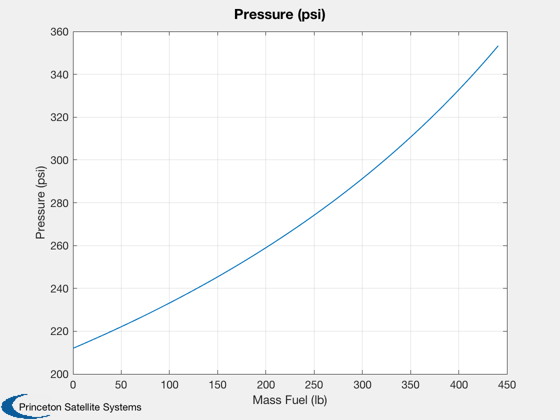

Demonstrate blow down. Most satellites use unregulated blowdown systems.
By choosing the appropriate tank volume you can get the desired
blowdown ratio. This demo will show a blowdown curve. Most spacecraft
use these kind of systems. The blowdown ratio is determined by the
thruster pressure limits.
------------------------------------------------------------------------
See also Constant, Plot2D, MolWt, BloDown, MolWt2R
------------------------------------------------------------------------
Nm2ToPSI = Constant('N/m^2 to PSI');
KgToLbF = Constant('Kg to Lb Force');
molWt = 0.004;
rPress = MolWt2R(molWt);
mFuel = linspace(0,200);
rhoFuel = 1000;
T = 293;
vTank = 0.5;
mPress = 1.2;
p = BloDown(mPress,rhoFuel,vTank,rPress,T,mFuel);
Plot2D(mFuel*KgToLbF,p*Nm2ToPSI,'Mass Fuel (lb)','Pressure (psi)')
